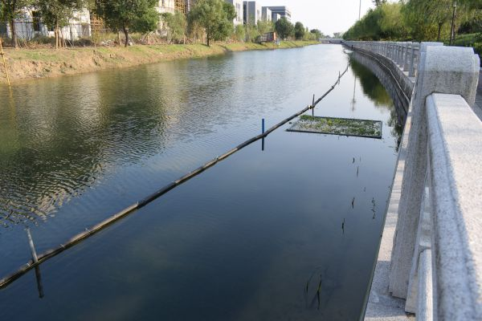

走在杭州塘秀洲段岸边的绿道上，只见河内水生植物郁郁葱葱，生态漂浮景观带依水相连。治水、景观一举两得，成为路经此地居民的共同感受。2016 年秀洲区对杭州塘秀洲段进行生态修复工程，在雨水排放口构建生态滞留净化湿地，对雨污水进行预处理，再经岸线景观湿地，进行深度净化。随着生态修复工程作用的逐渐发挥，河道的水质也由五类水转变成如今的三类水。
推动生态修复工程，是今年秀洲区“五水共治”重点之一。该区加强河流生态化治理，加大水生态保护与修复力度，开展驳岸生态化改造、沿岸绿化及景观建设，加快河岸湿地、氮磷拦截吸收、曝气充氧、生态浮床等工程建设，重新构建了物种丰富、结构完整、功能稳定的河道、池塘生态系统，稳步改善水质。
高照街道
比如，吴家木桥港前期河道水质较差，且河道自净能力较弱，夏季高温时期蓝藻爆发等情况较严重，高照街道于2017年7月委托浙江嘉科新能源科技有限公司实施水生态修复项目建设。通过控制外源污染，恢复水生态系统，种植沉水植物、挺水植物和浮叶植物，河道水生态系统逐渐恢复，植物净化水质的作用得以真正发挥。

洪合镇
洪合镇洪建港应用中科院河道生态修复技术设计理念，采用在河道两岸利用河道底泥构筑浅滩区域交叉种植再力花等挺水植物；同时在河道中间局部种植狐尾藻等浮水植物，为微生物、水生及两栖动物创造了栖息繁衍的自然生态环境，使河道的自我净化及生态修复能力得到进一步改善和提升。通过综合治理，目前洪建港的水质已由劣五类均已提升至Ⅳ类水。
王店镇
王店镇投入260多万元，对市河道实施生态修复工程，通过固化微生物缓释降解污染物技术、浮游生物控藻技术、引导沉水植被生态修复技术这三项关键技术，提升市河的自我清洁自我修复能力，形成良性的生态体系。经过综合治理，市河水质达到4类水标准，沿岸居民生活环境得到极大改善。
新塍镇
新塍镇的红眼睛港，制定专属的综合整治方案，相继封堵了沿河的排污口，并投入60多万元，对河道进行生态修复，共种植沉水植物5000平方米、挺水植物300平方米，还设置了35个曝气喷头，从而不断增强河道自净能力。如今，红眼睛港的水质已经从劣V类转为Ⅳ类。
王江泾镇
王江泾镇的九军河，在生态修复过程中，彻底清除河底淤泥，开展河道沿线治理，对周边区域进行绿化、美化，建设生态绿岛，同时在河道两侧建挺水植物，种植生态浮岛，同时合理利用南北闸门科学换水，水生态治理取得较好成效。昔日的问题河，成了今日的生态样板河。

数据显示，截至目前，秀洲区投入近3800万元，完成了高照街道吴家木桥港、油车港陶家桥港、杭州塘秀洲段、新城街道范家浜等11条河道的生态景观河道治理任务，大大提升了区域河道生态修复能力。
区治水办相关负责人称，下一步该区将加快推进河道综合整治，重点推进河流生态功能修复，开展美丽河湖创建工作。